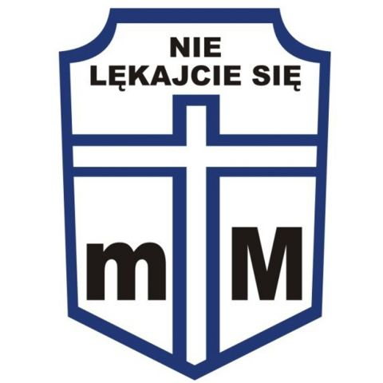

Krucjata Wyzwolenia Człowieka
Pierwowzorem Krucjaty Wyzwolenia Człowieka jest Krucjata Trzeźwości
(później Krucjata Wstrzemięźliwości), założona przez ks. Franciszka
Blachnickiego w 1957 r. Centrala Krucjaty została zlikwidowana w 1960 r.
przez Służbę Bezpieczeństwa. W następnych latach propagowanie
abstynencji odbywało się w ramach rekolekcji oazowych.
Bezpośrednim bodźcem do powołania KWC było wezwanie Jana Pawła II, aby
przeciwstawiać się „wszystkiemu co uwłacza ludzkiej godności i poniża
obyczaje zdrowego społeczeństwa”

KWC jest programem ewangelizacyjnym, którego założeniem jest uwolnienie człowieka od uzależnień, przede wszystkim od uzależnienia alkoholowego, poprzez zawierzenie Jezusowi Chrystusowi. Celem jest osiągnięcie wolności rozumianej zgodnie z chrześcijańską koncepcją wolności osoby. Uczestnicy Krucjaty praktykują modlitwę, post i jałmużnę. Modlitwa ofiarowana jest w intencji osób uzależnionych; post oznacza dobrowolną rezygnację z wszelkich napojów alkoholowych, jako wyraz chrześcijańskiej miłości do ludzi uzależnionych; jałmużna zaś jest dawaniem bliźnim tego, czego najbardziej potrzebują (nadziei, troski, czasu ...). Ideą Krucjaty jest odkrycie ludzkiej i chrześcijańskiej godności i życie według Bożego planu.
Są dwa rodzaje przynależności do Krucjaty Wyzwolenia Człowieka: kandydat – deklaruje przynależność do KWC na okres jednego roku, oraz członek – deklaruje przynależność stałą, na czas szczególnego zagrożenia (to bywa czasem błędnie określane jako przynależność na całe życie lub na czas istnienia Krucjaty) Dobrowolne zobowiązanie do modlitwy i całkowitej abstynencji deklarowane jest na piśmie i składane bądź wysyłane do tzw. Stanic Krucjaty istniejących w diecezjach i parafiach w Polsce i wielu innych krajach. Stanica nr 1 znajduje się w Krościenku nad Dunajcem w Centrum Ruchu Światło-Życie na Kopiej Górce. Deklaracje stałych członków wpisywane są do Ksiąg Czynów Wyzwolenia.